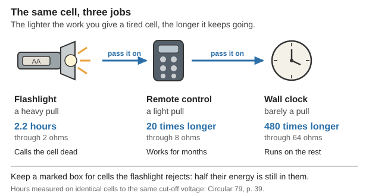
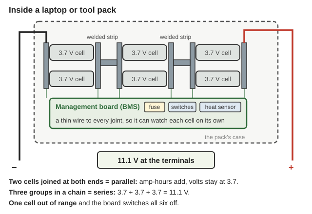
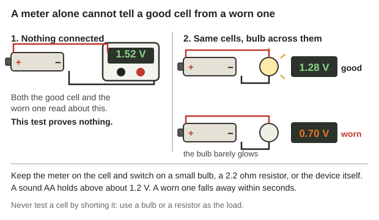
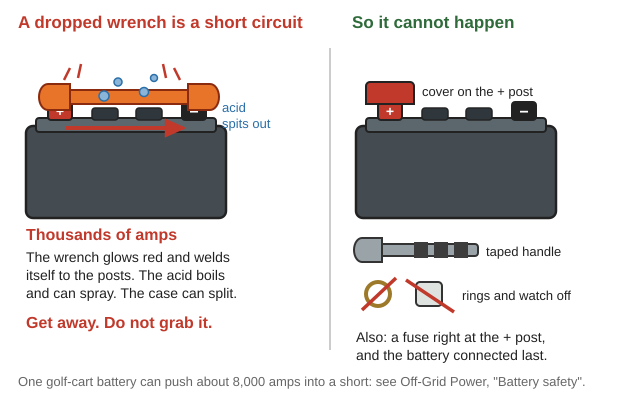

Guides › Heat, light & power · Emergency · Index A–Z
Every battery in the house except the solar bank: AA and AAA cells, the 9 V in the smoke alarm, the coin cells in watches and remotes, rechargeable AAs, the car battery, and the packs inside laptops, cordless tools and e-bikes. How to store them, how to charge them with no proper charger, how to test them with a cheap meter, when a "dead" battery is only dead for that one job, and where the line is between a sensible repair and a house fire. The solar bank has its own guide: Off-Grid Power covers choosing, sizing, watering and equalizing a bank, and this guide links to it rather than repeat it. The books are in Off-Grid-Power\Batteries, Off-Grid-Power\Electrical-Basics, Electronics-Repair\ and Homestead-Skills\Household-Make-Do.
The short version
- Cool and dry is most of the secret. Ten weeks at 95 °F costs a dry cell about 19% of its punch; at 41 °F, 4.4% (Circular 79, p. 37).
- A cell that will not run a flashlight will run a clock for months. Through 64 ohms one cell gave 480 times the service it gave through 2 ohms (p. 39).
- Voltage on its own lies. One cell watched for 20 years still read 1.36 V on a laboratory instrument but 0.215 V on an ordinary voltmeter (p. 53). Test under load.
- Never recharge a cell that is not marked rechargeable. Charging a lithium cell "can result in cell rupture and/or explosion" (NASA JSC-20793, p. 83).
- Never short any battery (NEETS 1, p. 96): shorted cells have "exploded with considerable force" (p. 88).
- A swallowed button cell is a two-hour emergency. One stuck in a child's gullet "can cause serious burns in only 2 hours" (CDC MMWR, p. 3). Hospital, now.
- Swapping a whole pack is sensible. Rebuilding a lithium pack out of mixed salvaged cells is how house fires start (below).
| Type | Volts per cell | Good for | Keeps on the shelf | Recharges | How it dies | What kills it fastest |
|---|---|---|---|---|---|---|
| Zinc-carbon ("heavy duty") | 1.3–1.5, sags to 0.8–0.9 | The cheapest cell, for light on-and-off work | About 1 year | None | Voltage sags under load, then it leaks | Heat; any heavy drain |
| Alkaline | 1.5 | Almost all household gear | Several years | None | Resistance climbs, then the seal lets go | Heat; being left inside unused gear |
| Lithium primary (AA, coin) | 1.5 (AA), 3.0 (coin) | Cold, smoke alarms, long storage | Up to 20 years | None | Runs nearly full, then stops quickly | Charging it; crushing it; heat |
| NiMH | 1.2, and it holds steady | Anything that eats alkalines | 15–30% a month; 2% low-self-discharge | 500–1,000 | Capacity fades, self-discharge rises | Heat; overcharge; a flat series pack |
| NiCd | 1.2 | Old tools, hard use, deep cold | 15–20% a month | 300–1,000 | A weak cell is reverse-charged and destroyed | Reverse charging; heat over 113 °F |
| Lead-acid, starting (car, tractor) | 2.0 | Short, heavy pulls | Recharge every 3–6 months | About 20 deep cycles | Sulfation, then shedding plates | Standing discharged |
| Lead-acid, deep-cycle, AGM, gel | 2.0 | The solar bank | 4–8% a month | 200–3,000 | Sulfation and plate corrosion | Heat; standing flat; undercharge |
| LiFePO4 | 3.2 (2.5–3.6) | The best bank there is | 2–10% a month | 1,000+ | Slow fade | Charging below freezing |
| Lithium-ion (phone, laptop, tool, e-bike) | 3.6–3.7 | Everything portable | 2–10% a month | 500+ | Capacity fades, then a cell swells or shorts | Heat; stored full; charged cold; a dent |
Where the numbers come from. Voltages and shelf life of the throw-away cells: Practical Action, pp. 2–3, NEETS 1, p. 88 (lithium's "remarkably long shelf life of up to 20 years") and NEETS 21, p. 94. By weight a D-size alkaline holds about 37 watt-hours per pound, a carbon-zinc D about 17, a lithium D about 175 (NASA, p. 83). Cycles, self-discharge and the 113 °F NiCd and 125 °F lead-acid limits: Table A1 of Lighting Global, p. 10, Practical Action, p. 4, Navy Electronics Technician, p. 27. Lead-acid cycles and the 20-deep-cycle life of a car battery: Practical Action, p. 5, IEA, pp. 13, 23; lithium stored at 20–40%, Lighting Global, p. 7.
Two things no table shows. Capacity is not a fixed number: amp-hours "varies inversely with the discharge current", and a battery gives its full rating only when emptied over 20 hours or more (NEETS 1, pp. 96–97); a D cell asked for the 0.3–0.5 A a flashlight wants gives about half its rating, a quarter if it never rests (Practical Action, p. 2). And cold cuts capacity: cells are rated at 68 °F, so warming them in a pocket gives extra run time (p. 3).
📚 Go deeper: Lighting Global Lithium-ion Batteries — the full comparison table; Practical Action Batteries — every type in plain words; NEETS 1, ch. 2 — how each kind works. Pictures: inside a dry cell, NEETS 1 p. 86, cylindrical, prismatic and pouch cells, Lighting Global p. 4, List of battery sizes.
Heat is what empties a cell on the shelf (Circular 79, p. 37):
| Stored at | Lost in 10 weeks |
|---|---|
| 41 °F | 4.4% |
| 77 °F | 10% |
| 95 °F | 19% |
| 113 °F | 25% |
| 131 °F | 52% |
A year at room temperature costs about 25% (same page), so the glovebox, the metal shed and the shelf above the stove are the places that kill cells. Here summer afternoons reach 100 °F, so a shed, an attic or a parked vehicle is the worst place for cells: keep them in the coolest inside cupboard (rule of thumb).
The fridge: true, but barely worth it. The old Navy rule was to keep unused cells "in refrigerated spaces" (NEETS 1, p. 86), written for zinc-carbon cells that went off in a year. Modern alkalines keep for several years between 50 and 77 °F below 65% humidity (Practical Action, p. 3), which a cool cupboard does. A cold cell sweats when it comes out, and damp corrodes contacts, so if you do use a fridge, seal the cells in a bag and let them warm up inside it (rule of thumb).
Never loose in a drawer with coins, keys or screws, and never left inside gear you are not using. A 9 V's terminals sit side by side and a coin across them is a dead short; batteries "can explode, release toxic gases, or leak hazardous chemicals" when mishandled (Navy, p. 25), and the first rule for every type is never short the terminals (NEETS 1, p. 96). The Navy's other rule is "Do Not store carbon-zinc batteries in electronic equipment for extended periods. The corrosive electrolyte could leak out of the battery and damage the equipment", and it says the alkaline rules are identical (p. 26): a radio put away for a winter with cells in it is how good radios die. Keep cells in their card, or upright in a box with the + ends one way, and tape over every 9 V's terminals (rule of thumb).
Why a "dead" battery still runs a clock. To the same cut-off voltage, identical cells gave 2.2 hours through 2 ohms, 20 times that through 8 ohms and 480 times through 64 ohms; and a cell whose voltage "has fallen to one-half its initial value" is "by no means one-half discharged" (Circular 79, p. 39). The old practice is to use cells in radios until they quit, then "finish them off" in flashlights, where low voltage only means a dim yellow light (Practical Action, p. 3). Keep a marked box for used but not finished cells, and feed clocks, remotes and door chimes out of it (rule of thumb).

The same cell, three jobs: what the flashlight calls dead, the clock calls new (Circular 79, p. 39).Never mix old with new, or one type with another, in one device. In a series string the strong cells push current backwards through the weak one, and reversing a cell "usually destroys it completely"; it happens "when one cell in a battery of ni-cad cells is weaker than the rest", which is "one reason why it is not a good policy to mix old cells and new ones" (Practical Action, p. 4). In parallel it is as bad the other way: with unequal voltages "the good batteries will overpower the failed (lower voltage) battery, causing relatively large currents within the batteries' connecting wires" (Kuphaldt DC, p. 417). 1.5 V and 1.2 V cells are not partners either (rule of thumb).
A leaking alkaline. The white crust is the cell's own electrolyte, and it is a caustic alkali, not an acid — "leakage of caustic alkaline electrolyte" is one of the ways a swallowed battery burns tissue (CDC MMWR, p. 3) — so baking soda, which neutralizes battery acid, does nothing here. Gloves and eye protection; cells out for disposal; brush the crust out dry, outdoors; wipe with a cloth damp with vinegar, then a clean damp cloth, and dry it fully; scrape the contacts with a wooden stick and burnish them with fine abrasive paper. Wash skin with plenty of water (rule of thumb — no book on this drive gives a cleanup method).
Button and coin cells are the ones to lock away: of 14 battery deaths of US children over 16 years, 12 involved button batteries, and every child was under four (CDC MMWR, p. 2). See Dangers; keep spares in a screw-top jar on a high shelf.
📚 Go deeper: Circular 79 Testing of Dry Cells — storage, temperature and how much service a cell gives; Practical Action Batteries — sizes and capacity. Pictures: how a cell's voltage falls as it is used, Practical Action p. 2, warmth and cold change a cell's punch, Circular 79 p. 36, AA battery, Button cell.
A NiMH AA is 1.2 V, not 1.5 V (Lighting Global, p. 10), and that worries people for the wrong reason. An alkaline starts at 1.5 V and slides down all its life, ending near 0.9 V (Practical Action, p. 2); a NiMH sits near 1.2 V almost to the end and then drops off a cliff. In most gear that means brighter for longer, then a sudden stop. A few fussy low-voltage cut-outs and some old meters call a fresh NiMH flat; everything else is happy (rule of thumb).
Buy now, while there is a shop: 16 to 24 low-self-discharge AA and 8 AAA, a charger that handles each cell on its own, a second charger that runs from 12 V, and AA-to-C and AA-to-D spacers so one size of cell serves everything (rule of thumb).
📚 Go deeper: Lighting Global, p. 10 — NiMH against every other chemistry; Practical Action, p. 4 — rechargeables, memory and mixing. Pictures: Nickel–metal hydride battery, Rechargeable battery.
A throw-away cell is "based on an irreversible electrochemical reaction, and consequently cannot be recharged" (Practical Action, p. 2). Pushing current back into one does not refill it; it makes gas and heat inside a sealed can.
Watering, equalizing, hydrometers and bank wiring are in Off-Grid Power; starting and charging a vehicle is in Vehicles, Tractors & Heavy Equipment. This is the car, truck and tractor battery that spends months doing nothing.
A battery that sits loses capacity even before it loses charge, and some of the loss is a temporary "sluggishness" that takes several charge-and-discharge cycles to clear (Circular 92, p. 46). Keep a stored battery charged: every 3–6 months flooded (IEA, p. 23), every 3 sealed (Practical Action, p. 6).
Standing discharged is what ruins it. Sulfation "is always the result of some sort of abuse", namely "(a) standing discharged for some time, (b) neglecting evidence of trouble, (c) replacing loss of water by electrolyte, and (d) regular undercharging" (Circular 92, p. 53). Note (c): topping up with acid instead of water is one of the four named abuses. Use distilled water only (Navy, p. 27), after a charge; "adding the active ingredient only increases the specific gravity" and "does not bring the battery back to a charged condition" (NEETS 1, p. 97). Terminals should be "tight and free of corrosion", cleaned "with bicarbonate of soda", and a corroded stranded cable end is cut off rather than brushed (TM 5-683, p. 24); grease them afterwards (IEA, p. 25).
Cold. A cold battery gives about 13% less for every 18 °F below 68 °F (Circular 92, p. 46), and a flat battery freezes and cracks: at a specific gravity of 1.100 the electrolyte freezes at 18 °F, at 1.220 at −31 °F, and a fully charged battery at 1.285 not until about −95 °F (Navy Construction Mechanic, p. 168). So the most useful winter job is keeping batteries full. Here most winter nights stay above 20 °F, but a cold snap has reached −6 °F, which is cold enough to freeze and crack a battery left standing flat: charge anything that overwinters outdoors (rule of thumb). To overwinter one: charge it right up, clean the top and posts, disconnect it, stand it cool but above freezing and off damp ground, and charge it again every three months (rule of thumb, from those pages).
Reviving a sulfated battery — honestly rated. Three things get called desulfating, and they are not equal.
| The claim | Does it work? |
|---|---|
| A long, low finishing charge, and on a flooded battery an equalizing charge | Yes, for a battery that was merely undercharged. Sulfate that has not gone hard is reduced by the current, and the test is that every cell's specific gravity stops rising (Circular 92, p. 54; Navy, p. 167; set points in Off-Grid Power) |
| The water treatment, flooded batteries only: tip the electrolyte out, fill the cells with distilled water, charge at half the finishing rate, read each cell's gravity every 4–6 hours, keep the acid under 110 °F, carry on until every cell has been steady for 12 hours, then set the gravity | Sometimes, on a stubborn case. A real federal procedure, written out in full (Circular 92, p. 54). It takes days, a variable charger, a hydrometer and acid, and cannot be done at all on a sealed, AGM or gel battery |
| Pulse "desulfator" gadgets, Epsom salts, aspirin | Wishful. No book on this drive supports any of them, and the modern reference is blunt: plate sulfate from standing deeply discharged "can never be recovered" (IEA, p. 23) |
Both the first two and the IEA's verdict can be true at once: the soft sulfate of a battery that went flat last week often comes back; the hard crystals in one that sat flat all winter do not. Judge it by a measured discharge, never by the voltage after charging — charge it fully, discharge at its normal rate to 1.70 V per cell (10.2 V on a 12 V battery), and if it will not give its rated capacity it is still sulfated (Circular 92, p. 54).
📚 Go deeper: Circular 92 Operation and Care of Vehicle-Type Storage Batteries — sulfation, the water treatment, charging and capacity; Off-Grid Power — watering, equalizing, hydrometers. Pictures: capacity lost standing idle, Circular 92 p. 46, inside a car battery, TM 9-8000 p. 284, Lead–acid battery.
What is inside. Cells — cylindrical, prismatic or flat pouch (Lighting Global, p. 4) — wired in series to add volts and in parallel to add amp-hours (NEETS 1, pp. 90–91), joined by welded metal strips, with a small board: the battery management system. The board is not optional: "cells used in battery packs should be individually monitored and controlled by a battery management system (BMS) to prevent electrical abuse", and a pack "should be designed to allow passive cooling of individual cells, and cell spacing should be designed to prevent thermal runaway from spreading cell-to-cell" (Lighting Global, p. 8). An 18 V tool pack is five cells in series; an 11.1 V laptop pack is three in series, often two or three such strings in parallel (rule of thumb).

Series for volts, parallel for amp-hours, welded strips between, and a board that watches every cell and can switch the whole pack off (a diagram drawn for this guide).Why a pack "dies" when most of it is fine. The board shuts the pack down when any one cell goes out of range, so one cell at 2.0 V locks out the four good ones beside it; the board, its fuse or its heat sensor can also fail. Two common pictures (rule of thumb): nothing at the terminals but 3.5–3.7 V on each cell inside means the board has tripped or gone to sleep (its own charger sometimes wakes it; a dead board does not come back); charges for a minute and quits means one cell or one parallel group is far below the rest. Measured at the tabs or the balance connector, a healthy pack has every group within about 0.05 V of the others — these cells live by small margins, with an overcharge tolerance of 50 mV or less per cell — and a group 0.3 V or more below the rest is the bad one. Open a pack only if it opens without cutting, prying or drilling near a cell: a charged lithium cell is "a fire or explosion hazard if crushed, punctured, or incinerated" (Lighting Global, p. 8; see Salvage).
What a careful person can do: swap the whole pack, or a whole factory module out of a big one; re-seat a loose connector; replace a blown pack fuse with the same rating; wake a sleeping pack with its own charger; rebuild a NiCd or NiMH pack with matched new cells (below); or rebuild a lithium pack with new, identical, matched cells and the original board — slow, costly, and only worth it for a tool you cannot replace.
What a careful person cannot do is build a lithium pack out of mixed salvaged cells. NASA's rule for any pack whose failure matters is that "cells shall be matched in a battery based on charge retention, internal resistance and/or AC impedance, and ampere-hour capacity", and that cell matching and balancing circuits "should not be rationale for accepting lots with poor cell lot uniformity" (JSC-20793, p. 32). A tub of pulls from six dead laptops is the definition of a poor lot, and no board and no amount of matching fixes it.
The hard rules
Where the line is. Swapping a whole pack or module is sensible work. Rebuilding a lithium pack from mixed salvaged cells is how house fires start: one cell in thermal runaway sets off its neighbours (NTSB, p. 18), and reignition "can occur within several hours to a day or more after the fire is extinguished" (p. 67).
NiCd and NiMH packs are a different matter. Their electrolyte is water-based, with none of the flammable solvent that makes a lithium cell burn (Lighting Global, p. 8); the cells are cheap, tolerant and work below freezing (Practical Action, p. 4); and a single cell really can be replaced. What still holds: every cell the same make and capacity, or the strong ones reverse-charge the weak one and destroy it (same page); the tabs are spot-welded, so you solder the tab, not the cell (rule of thumb); charge in series, never in parallel, and stay under 113 °F (Navy, p. 27); and NiCd holds cadmium, a toxic metal (Lighting Global, p. 10), so it is never cut open, burned or buried.
📚 Go deeper: NASA JSC-20793 — how packs are built so they do not burn: cell matching, fusing, every short-circuit path; Lighting Global, p. 8 — management systems, handling and disposal. Pictures: inside a cylindrical cell, Lighting Global p. 9, cells in series and in parallel, NEETS 1 pp. 90–91, Battery management system.
When the packs are gone. Most cordless tools are plain DC motors, so a dead pack's gutted shell with heavy wire out to a 12 V battery through a fuse will run an 18 V drill slowly and a 12 V drill properly (rule of thumb). More volts than the tool's rating burns out the motor or the switch. The dependable answers are a corded tool and an inverter (Off-Grid Power), a hand drill, or a brace; and the motors and magnets in dead tools are worth keeping either way (Salvage).
📚 Go deeper: NFPA Lithium-Ion Battery Safety — one page of charging rules worth pinning up; Lighting Global, p. 7 — charge limits, storage charge and cold charging.
"The two principal methods of charging are (1) constant current, and (2) constant voltage (constant potential). Constant current charging may be used on a single battery or a number of batteries in series. Constant potential charging is used with batteries connected in parallel" — and only direct current will do it, so alternating current must go through a rectifier first (Navy Construction Mechanic, p. 166).
In plain words: constant current means you fix the amps, watch the volts climb and stop by yourself; constant voltage means you fix the volts and the amps fall away as the battery fills, which stops itself. A lithium cell needs both in turn — constant current to the cell's limit, then constant voltage while the current dies away (Lighting Global, p. 7).
| Battery | How to charge it with what you have |
|---|---|
| Flooded lead-acid | Most forgiving: any rate that does not cause heavy gassing, overcharge or heat (IEA, p. 20). Too high a rate "will overheat and damage the plates", and it is full when the specific gravity has stopped rising for two hours (Navy, p. 167). Set points: Off-Grid Power |
| AGM and gel | The same idea at lower limits, never past the maker's figure (Off-Grid Power) |
| NiCd and NiMH | In series, never parallel (Navy, p. 27). A slow charge is the forgiving one — about a tenth of the cell's amp-hour rating for 14 hours (rule of thumb: no book here gives that figure). NiCd puts up with overcharge better than NiMH (Practical Action, p. 4) |
| LiFePO4 and lithium-ion | Do not improvise. Only a charger or controller made for the chemistry, never below 32 °F, never an "equalize" setting (Lighting Global, p. 7; Off-Grid Power) |
| Alkaline, zinc-carbon, lithium primary | Never (above) |
From a solar panel: through a charge controller, always, for a lead-acid battery, because overcharging leads to "electrolysis of the water ('boiling' the water out of the battery) and shortened life" (Kuphaldt, p. 417); sizing is in Off-Grid Power. A few watts on a parked vehicle's battery is the old trickle trick and still wants checking (rule of thumb). From a car or a generator: + to +, − to −, run the generator under load, and treat violent gassing as a sign the rate is too high (Off-Grid Power). From a hand crank or a bicycle: a few watts at best — a phone or a radio through a proper regulator, nothing like a bank (rule of thumb).
The resistor-and-meter charger. A 12 V source, a resistor and a meter in series make a crude constant-current charger: amps = (source volts − battery volts) ÷ ohms (arithmetic, from Ohm's law; see Practical Math). Pick the resistor for the current you want, check it with the meter, and watch the voltage and the temperature. It wastes most of the energy as heat, has no idea when to stop, and needs a person in the room with a watch. Use it for flooded lead-acid, NiCd or NiMH if you must, and never for lithium of any kind. Charge in a vented place, away from flame (below).
📚 Go deeper: Navy Construction Mechanic, pp. 166–167 — charging methods, rates and when a battery is full; Lighting Global, p. 7 — the lithium charge curve. Pictures: current and voltage through a lithium charge, Lighting Global p. 7, Battery charger.
Buy a multimeter — cheap now, the only instrument in this guide, and nothing else tells you what a battery is doing. Set it to DC volts and touch the leads to the terminals, red to +, black to − (Multimeters, p. 19; more in NEETS 16 and Make-Do Household) (rule of thumb: buy two, and spare probes).
| Battery | At rest, in good order | Call it finished at |
|---|---|---|
| Alkaline or zinc-carbon AA | 1.50–1.60 V fresh; under 1.45 V means age, damage or a fault (Circular 79, p. 53) | Below about 1.2 V for most gear (rule of thumb) |
| NiMH or NiCd | 1.25–1.30 V open circuit (NEETS 21, p. 94) | 1.1 V is completely discharged; no lower (same page) |
| Lithium-ion cell | 3.6–3.7 V nominal, about 4.2 V full (Lighting Global, pp. 7, 10) | Below 2.5–3.0 V it is damaged, not flat (p. 7) |
| 12 V lead-acid | 12.9 V full, 12.0 V empty at rest (Off-Grid Power) | Never below about 10.8 V under load (same) |
Why voltage under load is the real test. The Bureau of Standards kept one dry cell under observation for 20 years: on a laboratory instrument that draws almost no current it still read 1.36 V, but on an ordinary voltmeter it read 0.215 volt, because the cell's internal resistance had risen (Circular 79, p. 53). That is exactly what a tired AA does in a flashlight; and the other way round, a cell at half voltage is "by no means one-half discharged" (p. 39). The meter alone cannot tell you either thing; the meter with a load on can.

The meter alone says both cells are fine. With a bulb across them, the worn cell collapses (a diagram drawn for this guide).Signs a cell or pack will not hold charge (rule of thumb): it charges in minutes and empties in minutes; it warms just sitting on charge; it reads full an hour after charging and low next morning; a rechargeable AA full a fortnight ago is flat (ordinary NiMH loses 15–30% a month — Lighting Global, p. 10); a pack whose groups have drifted apart; or one cell of a flooded battery whose gravity stays low after an equalizing charge.
📚 Go deeper: Multimeters: How to Measure Voltage, Current and Resistance — using a meter from scratch; Circular 79, p. 53 — what the voltage test shows and what it hides. Pictures: a meter across a component, Multimeters p. 19, reading a hydrometer, NEETS 1 p. 95, Multimeter.
Shorting, the one that catches careful people. The first safety rule for every type is "NEVER SHORT THE TERMINALS OF A BATTERY" (NEETS 1, p. 96), and shorted cells have "exploded with considerable force" (p. 88). A wrench across a car battery's posts carries thousands of amps — one golf-cart battery can push about 8,000 A (Off-Grid Power). The wrench glows, welds itself to the posts, and the heat can boil acid out of the cells. Take off rings and watches, tape wrench handles, keep a cover on the + post, fit the main fuse right at the + terminal, and if a tool does short a battery, get away rather than grab it (same section). In a pack the fuse goes as close to the terminals as the design allows, rated well below what the cells can push (NASA, p. 44).

A dropped wrench is a short circuit: thousands of amps, a red-hot wrench welded to the posts and boiling acid. Cover the post, tape the handles, take the rings off (a diagram drawn for this guide).Hydrogen. "Any battery containing water in the electrolyte is subject to the production of hydrogen gas" when charged (Kuphaldt, p. 417), hydrogen with air "is flammable and/or explosive" (NASA, p. 38), and 4% in air is enough (Off-Grid Power). No smoking, flames or sparks near a charging battery (NEETS 1, p. 96); vent the top of the space; check the water level with a flashlight, never a match.
Acid. Flush skin or eyes "with large quantities of fresh water for a minimum of 15 minutes", eyelids held apart, and get help (NEETS 1, p. 96). Goggles and rubber gloves whenever a cap comes off. When mixing, always pour the acid into the water, and keep the level above the separators (Navy, p. 27); neutralize spills with baking soda and water (Off-Grid Power). Never put salt water in a lead-acid battery: it makes chlorine gas (Navy, p. 27). The white paste out of a leaking alkaline cell is caustic the other way round and burns too (CDC MMWR, p. 3).
Lithium fires, which come back. A charged lithium cell is "a fire or explosion hazard if crushed, punctured, or incinerated" (Lighting Global, p. 8), and abused cells can vent sulfur dioxide, thionyl chloride or hydrogen chloride (NASA, p. 83). If one burns: put out the flames, then soak the pack with water from a distance to cool it — never cover it, use ice, or pick it up (FAA SAFO 09013). Keep cooling after the flames are gone, which "could take an hour or more", because reignition "can occur within several hours to a day or more after the fire is extinguished" (NTSB, p. 67). Get out of the room and stay out: one cell's runaway sets off the next (p. 18), the gas is toxic and flammable, and a pack can reignite days later (fire FAQ, p. 2). A damaged pack also holds "stranded energy" that can shock whoever handles it (NTSB, p. 10), so leave a burned pack outdoors, in the open, for days.
A swallowed button cell: a two-hour emergency. A coin cell lodged in a child's gullet makes hydroxide against the tissue and "can cause serious burns in only 2 hours". The symptoms are "relatively nonspecific" — vomiting, belly pain, fever, diarrhoea, trouble breathing, trouble swallowing — so the diagnosis gets missed, and the worst injuries come from 3 V coin cells of 20 mm or more, the CR2032 size (CDC MMWR, p. 3). Of 14 child deaths recorded over 16 years, 12 involved button batteries, all the children were under four, and in four cases the child was examined and sent home before anyone found the battery (p. 2).
Disposal. Never burn a battery: carbon-zinc cells "could explode" in a fire and hold metal pollutants (Navy, p. 26). A charged lithium cell crushed in a garbage truck starts fires — the EPA traced 245 fires at 64 US waste facilities to lithium batteries, some of which destroyed whole buildings (EPA, p. 7) — and they "should be fully discharged before disposal" (Lighting Global, p. 8). Lead and cadmium are poisonous (p. 10). Tape the terminals of every dead cell, keep them in a steel or glass container away from the house, and hand them in where they are taken (Sanitation). Nearest takers here are the scrapyards and auto parts stores in Grants Pass for lead-acid; for household cells and packs, ask the county's transfer station what it will accept before you drive out (rule of thumb).
📚 Go deeper: FAA SAFO 09013 — the two-step method for a burning lithium pack; NTSB Lithium-Ion Battery Fires — reignition, stranded energy, how much water it takes; CDC MMWR — swallowed batteries; EPA — battery fires in the waste stream.
Put the right cell in the right job. Lithium primaries, with a shelf life "of up to 20 years" (NEETS 1, p. 88), belong in the smoke alarm, the emergency radio, the winter headlamp and the kit you hope never to open; NiMH in everything used weekly; alkaline in daily gear; and tired cells in clocks and remotes, where a cell gives hundreds of times the service it gave the flashlight (Circular 79, p. 39).
Rechargeables plus a small panel are the long-term answer. Throw-away cells are "one of the least cost-effective electrical power sources", at between US$140 and $1,300 per kWh — 700 to 6,500 times grid power (Practical Action, pp. 2–3) — while small NiMH cells "work out much less expensive in the long run since they can be recharged and re-used from 100 to 1,000 times" and "are particularly well suited for small photovoltaic application" (p. 4). A 10–20 W panel, a controller and a 12 V cell charger keep a household in AA cells for years (Off-Grid Power). Then use less: modern LEDs give about 80–150 lumens per watt (Off-Grid Power), so a 3 W LED headlamp on two NiMH cells beats a shelf of old flashlights (Light Without Power), and the load most worth planning for is the radio (Using a Radio).
What to stock now (rule of thumb): 16–24 low-self-discharge NiMH AA and 8 AAA, with a charger that handles each cell separately and a second one that runs from 12 V; a card of lithium AA for cold and storage, the coin cells your gear takes, and a couple of 9 V; dated alkaline AA/AAA in a cool cupboard, checked yearly with the meter; two multimeters, spare probes, a 2.2-ohm resistor and small bulbs for load tests; a hydrometer, distilled water, baking soda, goggles, rubber gloves, a terminal brush and grease; fuses and holders in several ratings, and heavy battery cable with lugs; and a spare charge controller and 12 V USB adapter in a Faraday can. Standardize on AA wherever the gear lets you.
📚 Go deeper: Practical Action Batteries, pp. 3–4 — what dry cells really cost and why rechargeables win; Storing Energy Without Batteries — the jobs that need no battery at all.
| What happened | What to do |
|---|---|
| A tool shorted a car battery; the wrench is welded on and glowing | Get away; do not grab it (Off-Grid Power). Expect boiling acid and a possible rupture; deal with it from a distance, goggles on, once it has cooled |
| Acid in the eyes or on skin | Flush with plenty of water for at least 15 minutes, eyelids held apart, then get help (NEETS 1, p. 96); Burns |
| A child may have swallowed a button cell | Hospital now, for an X-ray and removal; say it may be a battery; no food, no drink, no making them vomit (above) |
| A pack is swollen, hot, smells or has changed colour | Stop using it and stop charging it; put it outdoors on stone away from anything that burns, and never charge it again (NFPA, p. 1) |
| A lithium pack is burning | Flames out, then soak it with water from a distance; do not cover it or pick it up; leave the room and expect it to reignite (above) |
| Cells leaked inside a flashlight or radio | Gloves and eye protection; cells out; brush the crust out dry outdoors, wipe with a vinegar-damp cloth, dry, clean the contacts (above) |
| A car battery sat flat all winter | Charge it slowly, then measure it with a timed discharge or a hydrometer; if it will not give its capacity it is sulfated (above) |
| A pack reads 0 V at its terminals | Probably the board, not the cells; try its own charger, and measure the groups inside only if the pack opens without cutting (above) |
| Rechargeable AAs go flat in the drawer in a fortnight | Ordinary NiMH loses 15–30% a month; replace them with low-self-discharge cells (Lighting Global, p. 10) |
| A parallel bank keeps blowing the main fuse | A failed battery is being overpowered by the good ones: fuse each battery separately and find the bad one (Kuphaldt, p. 417) |
| Old book | What it says | Do this instead |
|---|---|---|
| NEETS 21, p. 94 | "The alkaline cell provides 1.2 volts" | An alkaline AA is 1.5 V (NEETS 1, p. 88; Practical Action, p. 2); 1.2 V is the NiMH and NiCd figure. That one sentence mixes up the two kinds people most often confuse |
| NEETS 21, p. 94 | "Discard both types of batteries at the first indication of weakness" | Right for a warship's radio room, wasteful at home: move weak cells down to light work (Circular 79, p. 39) |
| NEETS 21, p. 94 | NiCd cells "can be stored for a number of years with no significant loss of performance" | A sealed NiCd loses 15–20% a month (Lighting Global, p. 10) and self-discharges faster than lead-acid (Practical Action, p. 4). Charge one before you trust it |
| NEETS 1, p. 86 | Unused cells "should be stored in refrigerated spaces" | The direction is right (Circular 79, p. 37), but modern alkalines keep for years at 50–77 °F (Practical Action, p. 3); a cool cupboard is enough, and a cold cell sweats when it comes out (rule of thumb) |
| Circular 92, p. 46 | To revive an idle battery, discharge it to zero "then short-circuit for at least 5 hours" | That is for Edison nickel-iron cells, which no longer exist outside museums. Never short a modern battery of any kind (NEETS 1, p. 96) |
| Practical Action, p. 4 | "Wake" cells by fully charging and discharging them three or four times | Sealed NiCd only. Running NiMH or lithium flat on purpose shortens their life, and below 2.5–3 V a lithium cell is ruined (Lighting Global, p. 7) |
| Garage lore | "A concrete floor drains a battery" | It came from the days of wooden battery cases. Keep a battery clean, charged and off wet ground and the floor does not matter (rule of thumb — no book on this drive supports the claim) |
Look before you try it. 🖼️ = drawings in the books on this drive; the other links are photos in the offline Wikipedia.
Inside batteries
Small cells, packs and charging
Lead-acid care and testing